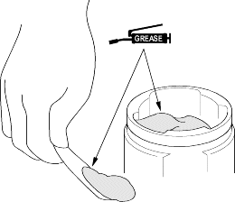
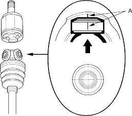
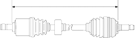
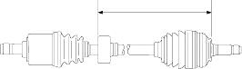

- Pack the inboard joint with the joint grease included in the new driveshaft set.
Grease quantity
Inboard joint:
D14Z6 engine models:
Right driveshaft:
108-126 g (3.8-4.4 oz)
Left driveshaft:
103.5-121.5 g (3.7-4.3 oz)
D16V1 engine models:
100-110 g (3.5-3.9 oz)

- Fit the inboard joint onto the driveshaft and note these items:
- Reinstall the inboard joint onto the driveshaft by aligning the marks (A) on the inboard joint and the rollers.
- Hold the driveshaft so the inboard joint points up to prevent it from falling off.

- Adjust the length of the driveshafts to the figure below, then adjust the boots to halfway between full compression and full extension. Make sure the ends of the boots seat in the grooves of the driveshaft and joint.
Left driveshaft:
D14Z6 engine models:
M/T: 787.7 – 792.7 mm (31.0 – 31.2 in.)
A/T: 791.2 – 796.2 mm (31.1 – 31.3 in.)
D16V1 engine models:
M/T: 784 – 789 mm (30.9 – 31.1 in.)
A/T: 787 – 792 mm (31.0 – 31.2 in.)
Right driveshaft:
D14Z6 engine models:
498.7 – 503.7 mm (19.6 – 19.8 in.)
D16V1 engine models:
498 – 503 mm (19.6 – 19.8 in.)

- Position the dynamic damper as shown below.
Left driveshaft:478 – 482 mm (18.8 – 19.0 in.)
Right driveshaft:258 – 262 mm (10.2 – 10.3 in.)

- Install the boot bands.
- For the low profile type, go to step 11.
- For the double loop type, go to step 13.
- For the ear clamp type, go to step 21.